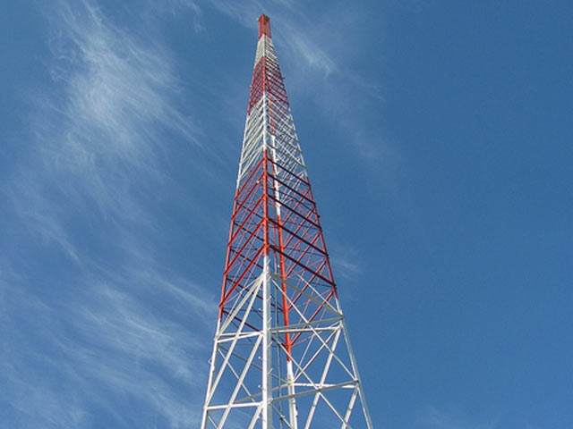

Tokyo Tower was erected in 1958 as a broadcasting tower. It controls
broadcast signals for television, FM radio transmission and reception, and traffic information
transmission in the Tokyo metropolitan area. The tower is also used for collecting weather and air
pollution data.
It soars 333 m (364 yd.) into the air. This makes it taller than the Eiffel Tower in Paris, which was
built to a height of 320 m (349 yd.) in 1889. Tokyo Tower is the highest self-supporting iron tower.
The tower is a famous sightseeing spot in Tokyo and it has two observatories: one at 150 m (164 yd.) and
the other at 250 m (273 yd.) above the ground, that are crowded with visitors enjoying the view. During
the day, it is possible to see the buildings and green areas of Tokyo and Mt. Fuji in the distance.
After sunset there is a beautiful view of the city lights.
Originally the tower was lit up to simply show its outline. In 1989 the illumination was re-designed,
and the tower now seems to float in the night sky. The beautiful illumination has been well received,
and many people say that it looks warm and inspiring. The illumination at Christmas which makes the
tower look like a candle is also the talk of the town.